KEEPERS OF KNOWLEDGE
Hogwarts School of Witchcraft and Wizardry relies on a faculty of exceptionally powerful and dedicated witches and wizards. Led by legendary Headmasters and professors of every discipline, they teach the next generation of magical youth while standing ready to defend the castle's ancient walls.
CHARACTERS OF THE GROUP
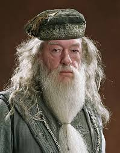
ALBUS DUMBLEDORE
Albus Percival Wulfric Brian Dumbledore was the legendary Headmaster of Hogwarts School of Witchcraft and Wizardry, widely regarded as the most powerful wizard of his age. His towering stature in the magical world derived not merely from his phenomenal magical ability but from his profound wisdom, strategic brilliance, and extraordinary capacity for love and compassion. He founded the Order of the Phoenix in response to Voldemort's first rise, and his unwavering opposition to dark magic shaped an entire generation of resistance fighters.
Dumbledore's possession of the Elder Wand, one of the Deathly Hallows, represented his complex relationship with power and mortality. His ultimate sacrifice in allowing Severus Snape to take his life demonstrated his commitment to his larger strategic plan, willingly offering himself as a pawn to secure victory. His legacy transcended his death, as his teachings and moral principles continued to guide Harry Potter and countless others through their darkest hours, making him perhaps the most influential figure in the modern wizarding world.
MINERVA MCGONAGALL
Minerva McGonagall was the Transfiguration Professor and Deputy Headmistress, a woman whose severe appearance masked a fiercely protective heart. Her mastery of Transfiguration was virtually unparalleled, making her one of the most powerful witches of her generation. She was an accomplished Animagus, capable of transforming into a tabby cat, and her dueling skills were formidable—she personally fought multiple Death Eaters and emerged victorious.
McGonagall's deep care for her students manifested through rigorous academic standards and unwavering loyalty. Her strong opposition to Ministry interference, particularly during Umbridge's regime, demonstrated her commitment to protecting students even when it meant direct confrontation with authority. Her leadership of Hogwarts during the final battle proved her strategic military capability, and her post-war service as Headmistress ensured that Hogwarts continued to uphold its highest values.
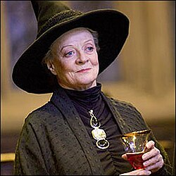

SEVERUS SNAPE
Severus Snape was perhaps the most complex figure in the magical world—a polarizing character whose public persona as a harsh, bullying Potions Master concealed extraordinary depth and moral complexity. His phenomenal talent for Potion-making was unmatched, making him invaluable to both Dumbledore and Voldemort. Yet beneath his cruelty and apparent malevolence lay an enduring, unrequited love for Lily Potter that shaped every significant decision of his adult life.
Snape's service as a double agent—genuinely serving Dumbledore while maintaining Voldemort's trust—represented his most profound sacrifice. His systematic bullying of Harry Potter, stemming from his resentment toward Harry's father, masked his genuine protection of the boy motivated by Lily's memory. His death at Voldemort's hands, his carefully preserved memories revealing his true loyalties, and Harry's eventual naming of his son in Snape's honor all testified to his complexity. He represented the possibility of redemption through love and sacrifice, even for those who appeared most irredeemable.
FILIUS FLITWICK
Filius Flitwick was a tiny wizard with a squeaky voice whose physical stature belied his tremendous magical prowess and combat expertise. As Charms Master, he was a virtuoso of his subject, teaching students one of the most practically useful disciplines in defensive magic. His history as a former Dueling Champion demonstrated that physical size had no bearing on magical skill or courage.
Flitwick's affection for his students, particularly the bright and hardworking Ravenclaws he shepherded, shaped a generation of skilled young wizards. His leadership of Ravenclaw House and his willingness to join in active defense of Hogwarts during the final battle showed that his professorial talents extended well beyond academic instruction to genuine magical combat.
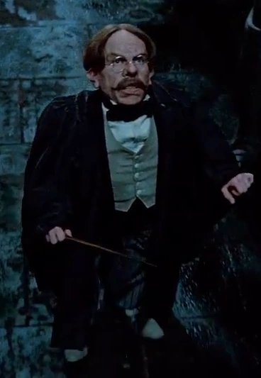
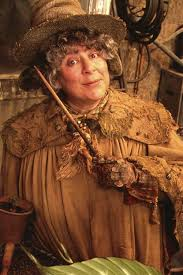
POMONA SPROUT
Pomona Sprout was the Herbology Professor and Head of Hufflepuff, a squat, cheerful witch usually covered in soil from her constant work with magical plants. Her nurturing, practical approach to both teaching and house leadership made her beloved by her students. Her expertise with magical plants extended to the deadliest specimens, and her Venomous Tentacula and Devil's Snare were formidable weapons in magical combat.
Sprout's cheerful demeanor masked genuine toughness and strategic capability. Her willingness to deploy her most dangerous magical plants in the final battle's defense revealed that her nurturing nature did not preclude fierce protection of those under her care. Her post-war continued service to Hogwarts ensured that future generations of students would benefit from her decades of accumulated knowledge and her deep compassion for young people.
SYBILL TRELAWNEY
Sybill Trelawney was the Divination Professor whose dramatic, doom-laden predictions and theatrical personality led many to dismiss her as a fraud operating on cold-reading techniques and vague statements. Yet behind her affectations lay genuine gift as a Seer, manifesting most importantly in her prophecy regarding a child born to parents who defied Voldemort three times—the prophecy that set the entire series of events in motion.
Trelawney's gift of true Sight manifested in moments of genuine prophecy that transcended her usual dramatic pronouncements. Her survival through most of the war, despite Death Eater presence in Hogwarts, testified to her value and perhaps to protective magic around her. Her continued post-war teaching ensured that genuine divinatory gifts would be cultivated and distinguished from charlatanism in future generations.
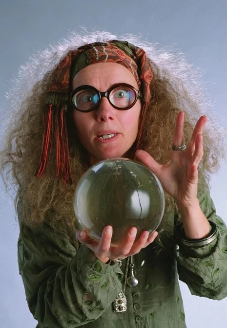
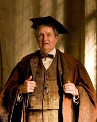
HORACE SLUGHORN
Horace Slughorn was a Potions Master and former Head of Slytherin House who enjoyed the comforts of life and took pride in "collecting" famous and talented students. His genuine passion for his subject and his affinity for talented young people gave him significant influence. Most critically, he possessed a memory of young Tom Riddle asking questions about Horcruxes—information crucial to understanding Voldemort's immortality scheme.
Slughorn's cowardice in initially refusing to return to Hogwarts gave way to genuine participation in the final battle once convinced of its necessity. His willingness to provide the critical memory information, despite his initial reluctance and fear, made him essential to the defeat of Voldemort. His post-war continuation as Potions Master ensured the survival of institutional knowledge and teaching excellence.
RUBEUS HAGRID
Rubeus Hagrid was the Keeper of Keys and Grounds, a half-giant with a wild tangle of black hair whose loyalty to Dumbledore was absolute and unwavering. Despite his expulsion from Hogwarts for an accusation he did not commit, he remained on Dumbledore's staff and became one of the most beloved figures on castle grounds. His magical heritage gave him immense physical strength, while his genuine love of magical creatures—despite their extreme dangerousness—informed his teaching philosophy.
Hagrid's journey as a Care of Magical Creatures professor allowed him to transform his passion for creatures into genuine educational contribution. His willingness to risk his life repeatedly for Dumbledore and the greater good, combined with his emotional depth and capacity for love, made him far more than a simple servant. His survival of the war and his continued post-war service demonstrated the profound importance of his character in Hogwarts' ongoing mission.

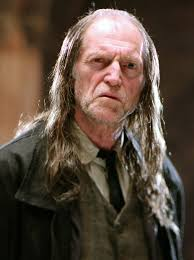
ARGUS FILCH
Argus Filch was the caretaker of Hogwarts, a Squib whose inability to perform magic made him bitter and deeply resentful toward students who wielded the magical abilities he could never possess. His obsession with rules and punishment reflected both his attempt to impose order within the castle and his displaced anger at his own magical inadequacy. His beloved cat, Mrs. Norris, represented his capacity for affection despite his perpetually sour disposition.
Filch's cruelty to students stemmed from his internal suffering and sense of powerlessness. Yet his loyalty to Hogwarts remained constant, and his eventual participation in its defense suggested that he recognized a cause larger than his personal grievances. His complex characterization revealed that even those most damaged by circumstance could find purpose and meaning.
QUIRINUS QUIRRELL
Quirinus Quirrell was the Defense Against the Dark Arts professor whose nervous, stammering demeanor and turban (concealing horrific scarring) suggested a traumatized war veteran. This appearance masked a profound betrayal: he was possessed by the severely weakened, bodiless spirit of Lord Voldemort himself, making him an unwitting conduit for dark magic at Hogwarts' very heart. His psychological torture by the Voldemort fragment embedded in his body represented a man caught between his own consciousness and the parasitic presence consuming him.
Quirrell's attempted theft of the Philosopher's Stone and protection of it behind magical trials demonstrated his complex position as both servant and victim. His death when attempting to touch Harry Potter, burned by the protection spell Lily's love had placed on the boy, represented the symbolic defeat of Voldemort's first attempt to return to power. His tragedy highlighted the costs of serving dark forces.
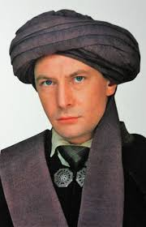
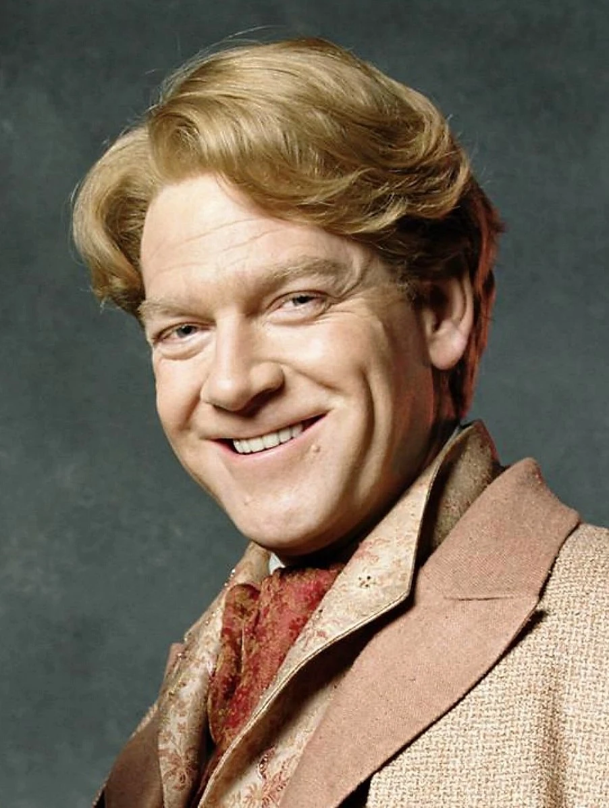
GILDEROY LOCKHART
Gilderoy Lockhart was a dashingly handsome celebrity author who embodied the dangers of charisma divorced from substance and competence. His numerous published books were entirely fraudulent, each a stolen narrative from actual brave wizards whose memories he systematically erased. His appointment as Defense Against the Dark Arts professor despite his complete lack of practical defensive ability represented the Ministry's misguided prioritization of celebrity and appearance over genuine qualification.
Lockhart's exposure as a fraud and his eventual institutionalization after a memory charm backfired on himself represented karmic justice delivered through his own techniques. His brief tenure as professor, marked by student danger and educational failure, illustrated the consequences of allowing shallow celebrity to substitute for genuine expertise and moral character. His permanent removal served Hogwarts' long-term mission.
MADAM HOOCH
Madam Hooch was the Flying Instructor and Quidditch referee, a woman with short, spiky gray hair and distinctive yellow hawk-like eyes that enhanced her intimidating presence. Her fanatical dedication to broomstick safety reflected legitimate pedagogical concerns about student welfare. Her expertise in flying and refereeing Quidditch matches demonstrated her comprehensive knowledge of magical sports.
Hooch's strict disciplinary approach balanced genuine concern for student safety with fair enforcement of flying regulations. Her willingness to respond to emergencies and her involvement in Hogwarts' defense during the final battle showed that her expertise extended beyond entertainment sports to genuine magical combat. Her continued post-war service ensured that future generations would benefit from her decades of accumulated knowledge.
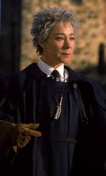
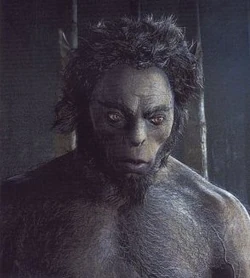
FIRENZE
Firenze was a centaur of great nobility and wisdom who taught Divination at Hogwarts despite the historical distrust between his species and humanity. Unlike the majority of his herd, he recognized that humans and centaurs could cooperate meaningfully. His intervention in the Forbidden Forest to save Harry from attack demonstrated his commitment to individual students' welfare and his willingness to defy his herd's prejudices.
Firenze's exile from the centaur community for his cooperation with humans and his continued teaching at Hogwarts represented his choice of individual conscience over tribal loyalty. His genuine skill in Divination and his philosophical approach to fate and choice made him a valuable educator. His final fate—death at the hands of his former herd—represented the tragedy of remaining principled in the face of collective hatred.
AURORA SINISTRA
Aurora Sinistra was the Astronomy Professor whose classes were held in the Astronomy Tower under the open night sky. Her calm, academic demeanor and passion for celestial observation made her an excellent educator for students seeking to understand the magical properties of stars and planets. Her careful, methodical approach to her subject reflected both intellectual rigor and genuine care for student learning.
Sinistra's loyalty to Hogwarts during the war and her continued post-war service ensured institutional continuity. Her reputation for fairness and her genuine interest in students made her a stabilizing presence through turbulent times. Her contribution to Hogwarts' educational mission endured long after the war's immediate dangers passed.
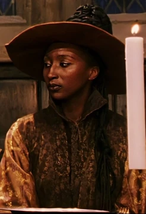
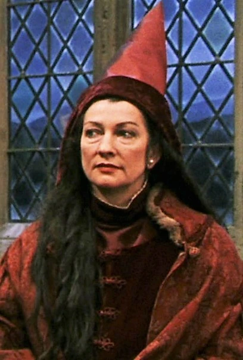
SEPTIMA VECTOR
Septima Vector was the Arithmancy professor whose subject required precision, logical thinking, and mathematical sophistication. Her specialized knowledge of magical numbers and equations demanded both intellectual rigor and practical magical application. Her highly intellectual approach attracted the most academically ambitious students, particularly those in Ravenclaw House seeking to understand the mathematical foundations of magic.
Vector's expertise in complex magical mathematics made her valuable to the resistance effort, as magical calculations underpin much advanced spell-work and potion-crafting. Her continued post-war teaching ensured that the mathematical foundations of magic would be passed to future generations of students. Her subject, often overlooked compared to more dramatic fields, represented the intellectual depth required for genuine magical mastery.
BATHSHEDA BABBLING
Bathsheda Babbling was the Ancient Runes professor whose expertise in old magical languages and forgotten writing systems made her invaluable to Hogwarts' scholarly mission. Her subject, though complex and demanding, attracted students seeking to understand the foundational languages underlying modern magic. Her academic specialization connected contemporary wizards to their magical heritage and the wisdom of past generations.
Babbling's respect among Ravenclaws and her contribution to Hogwarts' academic excellence demonstrated the importance of rigorous scholarly disciplines. Her continued post-war teaching ensured that ancient magical knowledge would not be lost, preserving connections to the magical world's deep history and traditions. Her expertise complemented the more practical and combat-focused subjects, ensuring balanced magical education.
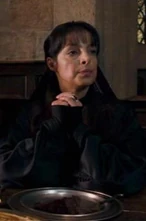
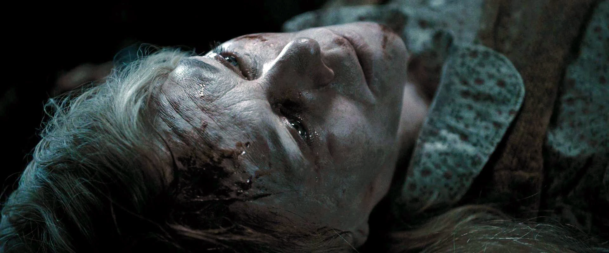
CHARITY BURBAGE
Charity Burbage was the Muggle Studies professor whose progressive views and genuine support for equality between Muggles and wizards made her both respected and, to the prejudiced, deeply objectionable. Her subject attempted to build understanding and sympathy for the non-magical world, challenging the pure-blood supremacy ideology prevalent in certain wizarding circles. Her intellectual integrity in teaching her subject despite Ministry hostility demonstrated genuine courage.
Burbage's views ultimately cost her life when Voldemort personally murdered her as an affront to his ideology of pure-blood supremacy. Her death represented the brutal consequences of standing against fascistic ideology. Her legacy endured in the minds of students she educated, who carried forward her vision of interspecies cooperation and equality. Her murder demonstrated the evil that the wizarding world was being called to resist.
CUTHBERT BINNS
Cuthbert Binns was the History of Magic professor and Hogwarts' only ghost-faculty member, having died while grading papers and simply continued his instruction from beyond death. His lectures were notoriously dull and disconnected from student interest, causing even the most academically dedicated pupils to struggle against sleep during his lessons. Yet his encyclopedic knowledge of magical history and his systematic approach to historical documentation possessed genuine scholarly value.
Binns represented the challenge of connecting historical knowledge to contemporary relevance. His ghost state meant he experienced teaching in a distinctly removed manner, contributing to the disconnection between his material and his students. Yet his continued post-war instruction ensured that wizarding history, however dully presented, would be preserved and transmitted to future generations. His persistence suggested that even in death, there remained work to be done for educational institutions.
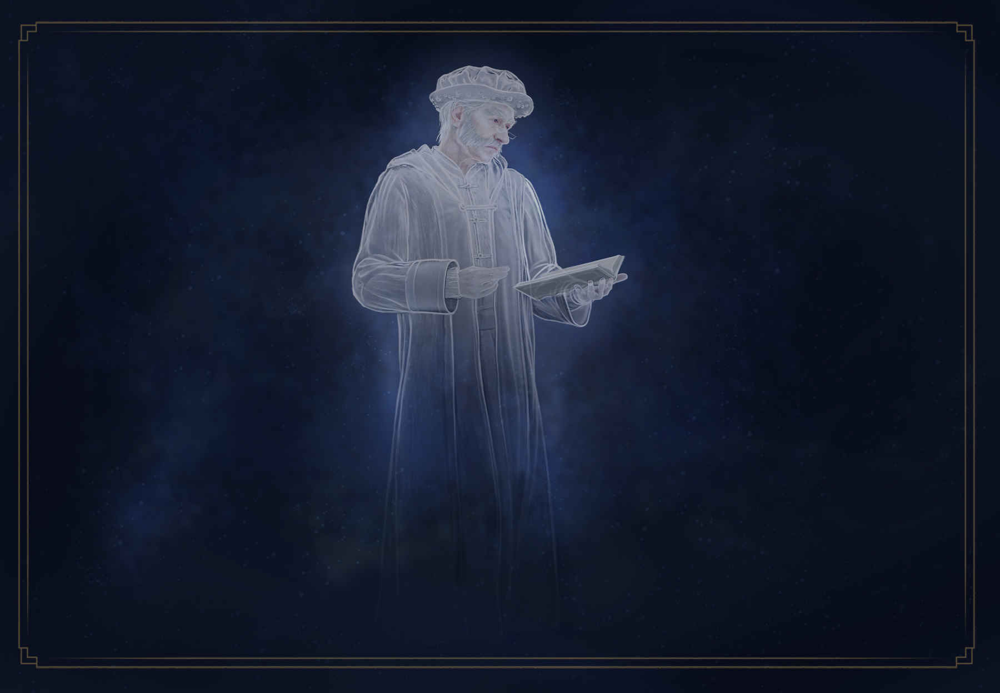
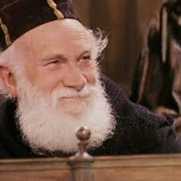
SILVANUS KETTLEBURN
Silvanus Kettleburn was a former Care of Magical Creatures professor whose teaching methods were recklessly dangerous, resulting in the loss of several limbs to the very creatures he attempted to teach. His inability to maintain physical safety while instructing made him ultimately unsuitable for classroom leadership, despite his genuine passion for magical creatures and his encyclopedic knowledge of their behavior and care.
Kettleburn's replacement by Hagrid represented an institutional recognition that enthusiasm and knowledge, however genuine, did not substitute for competent classroom management and student safety prioritization. Yet his legacy endured in the knowledge he had transmitted and in Hagrid's later use of Kettleburn's notes and techniques in his own instruction. His injury history testified to the genuine dangers inherent in working with dangerous magical creatures.
WILHELMINA GRUBBLY-PLANK
Wilhelmina Grubbly-Plank was a substitute Care of Magical Creatures professor whose practical, safety-focused approach contrasted sharply with both Kettleburn's recklessness and Hagrid's tendency toward emotional attachment to dangerous creatures. Her calm, professional demeanor and her ability to establish order in the classroom made her an effective educator. Her particular skill lay in teaching students to approach dangerous creatures with respect and caution rather than either recklessness or fear.
Grubbly-Plank's willingness to step into a difficult position and her consistent professionalism demonstrated her commitment to education and student welfare. Her contrast to Hagrid was not one of superiority but of different approaches to the same subject—where Hagrid emphasized love and connection, Grubbly-Plank emphasized respect and safety. Her continued post-war availability as a substitute reflected her ongoing commitment to Hogwarts' educational mission.
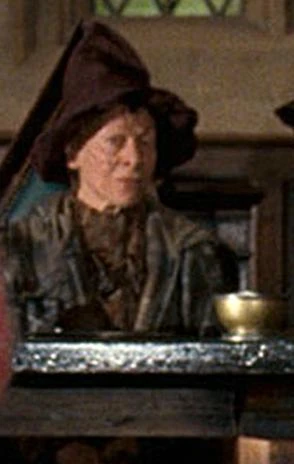
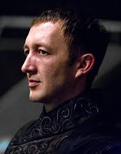
AMYCUS CARROW
Amycus Carrow represented the corrupted extremes of magical education when fascistic ideology took control of Hogwarts. As the Defense Against the Dark Arts professor during Voldemort's regime, he perverted the subject from defense to offense and from education to indoctrination. His promotion of cruelty and punishment as pedagogical tools reflected Death Eater ideology rather than any legitimate educational philosophy. Students were tortured under his instruction as a matter of course, creating trauma rather than learning.
Carrow's presence symbolized how educational institutions could be weaponized against their own students. His eventual defeat and arrest represented justice served against those who violated educational ethics. His removal from Hogwarts allowed the institution to heal and return to its proper mission of education rather than ideological coercion.
ALECTO CARROW
Alecto Carrow served as Muggle Studies professor during Voldemort's regime, completely perverting the subject into anti-Muggle propaganda and hate education. Her lessons promoted hatred and supremacist ideology rather than any genuine study of Muggle society. She reversed Charity Burbage's progressive approach, using the very subject created to build understanding as a vehicle for cultivating contempt and violence.
Alecto's defeat during the final battle represented the military defeat of those who had attempted to weaponize education against minority populations. Her removal from Hogwarts symbolized the institution's rejection of fascistic ideology and its recommitment to education as a tool for building understanding rather than hatred. Her fate demonstrated that those who fought for such institutions would face consequences for their actions.
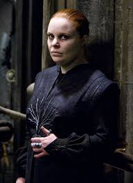
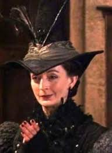
MADAM PINCE
Madam Pince was the Hogwarts librarian whose extreme strictness regarding book care reflected her genuine passion for preserving knowledge and protecting magical texts. Students feared damaging library books partly because of her ferocious reaction to any injury to volumes, yet her terror served a legitimate purpose—protecting irreplaceable magical knowledge. Her insistence on silence allowed students to concentrate on their research and study.
Pince's obsessive book care ensured that Hogwarts' vast magical library remained preserved through the war and its aftermath. Her willingness to restrict access and enforce discipline protected resources that spanned centuries of magical learning. Her gruff exterior masked genuine care for preserving knowledge for future generations. Her post-war continued stewardship ensured that this invaluable resource remained available to students.
POPPY POMFREY
Madam Pomfrey was the Hogwarts matron whose exceptional skill in healing magical injuries made her invaluable to the castle community. Her firm demeanor combined with her obvious deep caring for student welfare created a unique environment where students felt both safe and appropriately challenged. Her healing abilities extended far beyond simple mending of bones, encompassing complex curse reversal and recovery from severe magical injuries.
Pomfrey's commitment to her patients transcended the professional, as she treated each injury with genuine concern for the student's full recovery. During the final battle, she provided critical emergency medical care to countless casualties. Her role in the Battle of Hogwarts demonstrated that healing professions were essential to resistance efforts. Her post-war continued service ensured that generations of students would benefit from her expertise and her compassionate approach to care.
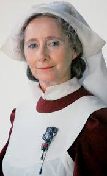
OGG
Ogg was the Hogwarts gamekeeper prior to Hagrid's appointment to the position, serving under Dumbledore's leadership and contributing to the castle's grounds maintenance and creature management. His long service at Hogwarts demonstrated loyalty and dedication to his institution. His eventual retirement allowed the position to pass to Hagrid, continuing the lineage of gamekeeper leadership at the castle.
Though Ogg's story occupies minimal narrative space in the broader wizarding history, his role represented the continuity of institutional service that sustained Hogwarts across generations. His retirement marked a transition point that allowed new leadership to bring fresh approaches while building on established foundations. His legacy endured in the groomed grounds and organized systems he left for his successor.